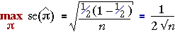

Worst-case standard error
When estimating a population proportion (or probability) π, the corresponding sample proportion p is used as a point estimate. It has standard error

This standard error takes its maximum value when π = 0.5 and this provides a worst-case value for the standard error. Whatever the value of π, the standard error of the estimate will be less than

The diagram below shows the estimated standard error from a sample of size n = 100.
Drag the slider to investigate how the standard error depends on p and observe that it is maximum when p = 0.5. Note also that the resulting confidence interval for π is also widest for this value.
Reporting the accuracy from a survey
Public opinion polls often ask questions about a range of topics. Each question can be modelled as a random sample from some categorical population. Several proportions are usually estimated from the data that are collected and each of these point estimates can be associated with a standard error and confidence interval.
Rather than giving separate confidence intervals for the individual proportions, the poll results are usually accompanied by a single value called the margin of error of the poll. This is the worst-case '±' value for a 95% confidence interval that arises when p = 0.5.

The '±' values of the 95% confidence intervals for all proportions reported in the poll will be less than this value — sometimes considerably less.
The diagram below shows the 95% confidence intervals that would arise from samples of size n = 100 for all possible values of p. Drag the slider to see the widths of the confidence intervals.
Observe that the confidence interval is widest when p = 0.5 and narrowest when p is close to 0 or 1. (Note however that our guidelines on sample size imply that we should not be using this type of confidence interval for n = 100 when p is under 0.05 or over 0.95.)
Select Margin of error from the pop-up menu. Observe that
Example
A numerical example illustrates the use of margin of error in a poll.
The table below shows the results from a public opinion poll conducted in the Palmerston North electorate in New Zealand by Massey University's Department of Marketing shortly before the New Zealand general election in October 1996.
| Candidate | Number intending to vote | Percentage | ||
|---|---|---|---|---|
| Steve Maharey (Labour) George Mathew (National) Gerard Hehir (Alliance) Trevor Jans (New Zealand First) Grant Bowater (Christian Coalition) Val Wilde (ACT) Other |
|
|
Although the table excludes respondents who were undecided, refused to answer the question or indicated that they would not vote, the data will be, at least approximately, a random sample from the population of those who will later vote in the election.
Since the sample size is n = 222, the margin of error for the poll is 0.067 — i.e. 6.7%.
Since Maharey got approximately 1/2 of the votes, a 95% confidence interval for the percentage voting for him is approximately (51.4 ± 6.7). However properly calculated confidence intervals for the other candidates would be narrower than this.